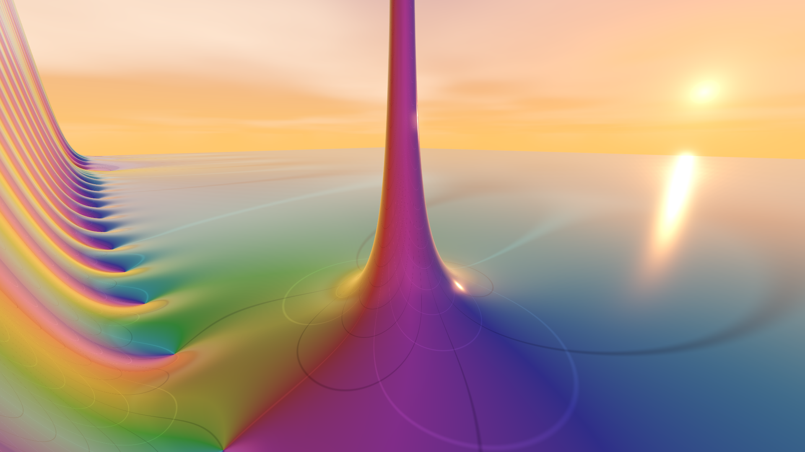
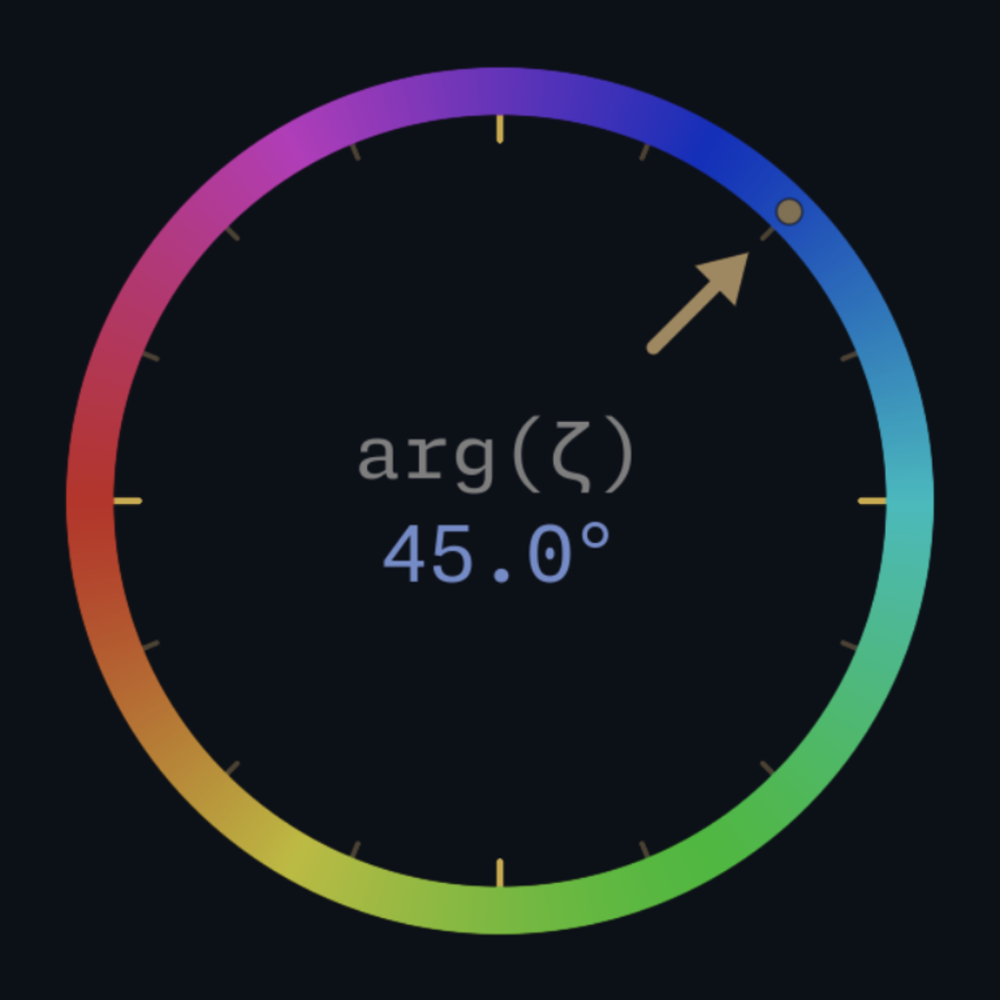

Complex Functions Explorer
An interactive 3D journey through the complex plane

Download
Introduction
Complex Functions Explorer is an interactive 3D visualization tool for exploring complex analysis through immersive landscapes. Navigate functions such as the Riemann zeta function and discover zeros, poles, critical structures, and transformations directly in the complex plane.
Designed for students, researchers, and the mathematically curious, it offers an intuitive way to experience the geometry hidden inside complex functions.
Highlights
- Explore complex functions in real time as immersive 3D landscapes.
- Visualize function values using color for phase and terrain height for magnitude.
- Navigate the complex plane freely with smooth first-person camera controls.
- Discover zeros, poles, and critical structures.
- Explore the Riemann zeta function and its hidden geometry.
- Use the minimap to orient yourself across the complex plane.
- Adjust function parameters and watch the landscape transform instantly.
- Navigate between branches of multivalued functions through immersive portals.


The Mathematics
The explorer supports a variety of complex functions, including trigonometric, exponential, rational, and logarithmic families.
A special focus is given to the Riemann zeta function \( \zeta(s) \), whose rich structure makes it one of the most fascinating objects in mathematics.
The built-in zero search tools allow you to investigate points where \( f(s)=0 \), revealing the geometric structure hidden in the complex plane.
Further Information
For more detailed information about the project and its mathematical background, please refer to the documentation.